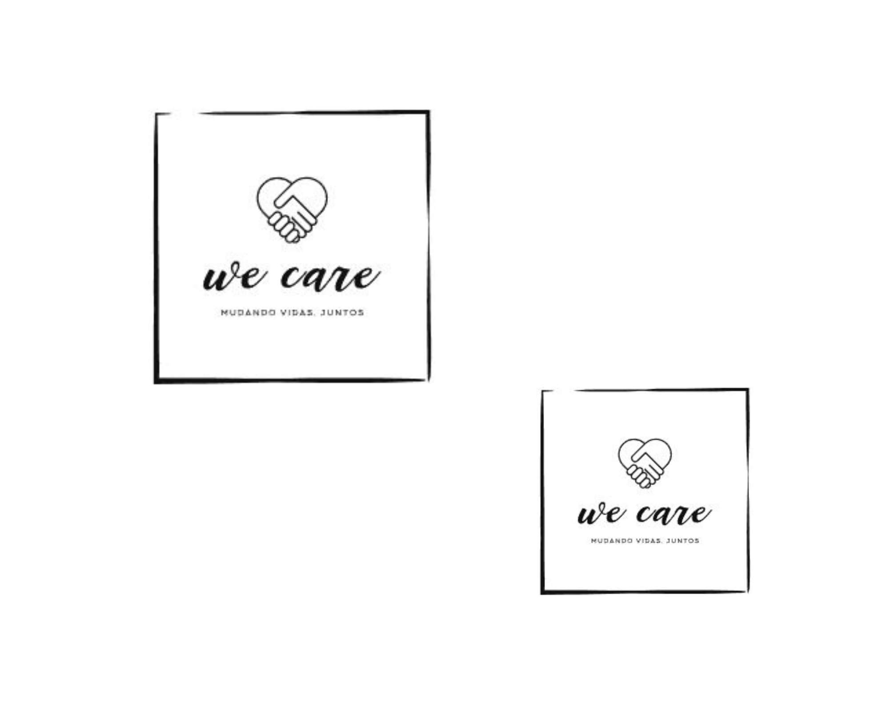

<div class="content">
    <div id="homeContent paragraph">
        <div class="paragraph">
            <h3>Vagas Adicionadas Recentemente</h3>
            <p class="m-5">
                Raul esta desenvolvendo
            </p>
        </div>
        <div class="paragraph">
            <p>
                O trabalho voluntário é fundamental para o desenvolvimento de uma sociedade mais justa e solidária. Quando indivíduos se dedicam a ajudar
                 o próximo de forma gratuita, eles contribuem para o fortalecimento de laços de solidariedade e cooperação entre as pessoas. 
                 Além disso, o trabalho voluntário pode ser uma excelente forma de desenvolver habilidades e competências, como a liderança, a comunicação, 
                 a resiliência e a empatia.
            </p>
        </div>
        <div class="paragraph">
            <p>
                Outra importância do trabalho voluntário é o seu papel na redução das desigualdades sociais. Ao dedicar seu tempo e habilidades a projetos sociais, os voluntários ajudam a suprir demandas que muitas vezes não são atendidas pelo Estado ou por outras instituições. Dessa forma, é possível mitigar os efeitos da exclusão social, contribuindo para a promoção de um mundo mais justo e igualitário.
            </p>
        </div>
        <div class="paragraph">
            <p>
                Além disso, o trabalho voluntário pode ser uma forma de fazer a diferença em comunidades locais e em todo o mundo. Através de projetos sociais, voluntários podem contribuir para a melhoria da qualidade de vida de indivíduos em situações de vulnerabilidade, bem como promover ações de preservação ambiental, educação, cultura e saúde. Com seu esforço e dedicação, é possível criar um impacto positivo duradouro na vida de muitas pessoas.
            </p>
        </div>
        <div class="paragraph">
            <p class="mr-5">
                Por fim, o trabalho voluntário também pode ser uma excelente oportunidade para os voluntários se conectarem com outras pessoas e ampliarem suas redes de contatos. Ao se envolver em projetos sociais, é possível conhecer pessoas com interesses semelhantes, construir amizades e criar conexões valiosas que podem ajudar em futuros projetos pessoais ou profissionais. Além disso, o voluntariado pode ajudar a desenvolver uma sensação de propósito e pertencimento em uma comunidade, o que é fundamental para a construção de uma vida plena e satisfatória. 
            </p>
            <!--  -->
        </div>

        <div class="d-none d-md-block">
            <app-carousel></app-carousel>
          </div>
          
        <div class="paragraph">
            <p class="text-center">
                Ajude a transformar vidas. 
            </p>
            <span class="text-center">
                <button>
                    <a routerLink="/user/create" class="nav-link btn btn-lg" routerLinkActive="active">Começar</a>
                </button>
            </span>
    <!-- 
            <div class="text-center">
                <a routerLink="/user/create" class="btn btn-primary btn-lg">botão classe text-center</a>
            </div> -->
    </div>  
</div>
